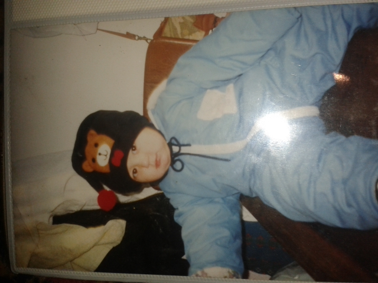
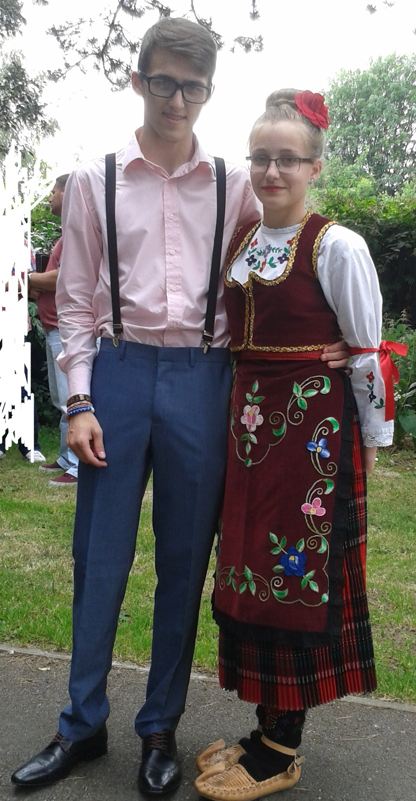

Hello, my name is Nemanja Maslic. I was born on the 14th of October, 1997. I was born in Serbia, and moved away to Norway in 1998, and then moved to England in 1999. I lived in London for a few years and then moved to a small town called Corby. I live with my parents and 2 sisters. I currently study at the University of Northampton, and I'm doing a degree in Business Computing Systems. This involves me looking at things like Digital Footprint, Web Development, Programming, Problem Solving, Databases, Software Engineering and Computer Systems.
 This is baby me in 1997I am currently designing my own website which will have my CV on it and information about me which I will be using as an employability tool. This will show employers that I can use HTML coding, and that I'm able to create a website. This is putting my skills to the test. As a student I am honing my coding skills and putting together the knowledge which I have learnt so far in Web Development.
 This is me and my sister BiljanaI have always found working on a computer a thing which I enjoyed. So I decided to put that to use by doing IT at A Level, this I truly believe was a great choice as I was always using a computer; in and out of school. Doing IT for a few years really helped to create a sense of professionalism towards my work as it always had to be at a good standard when it was being marked. So when I do complete a piece of work I generally take pride in what I have composed myself.